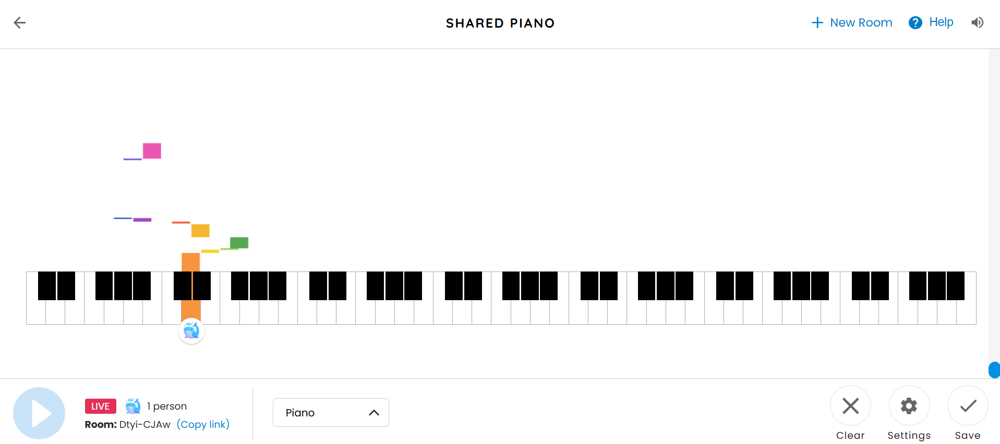
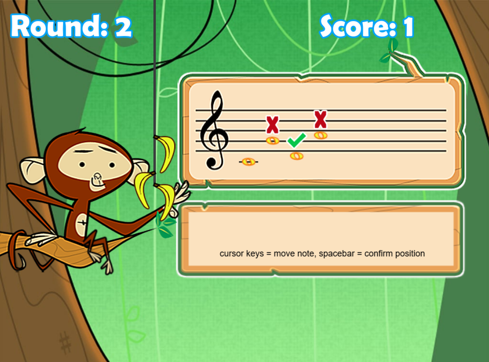
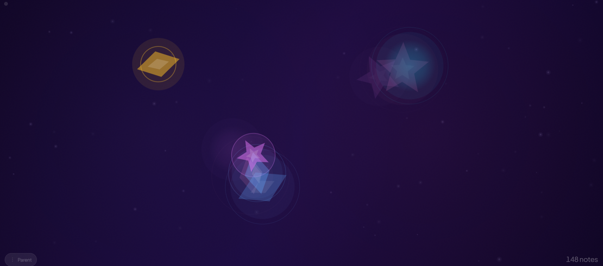
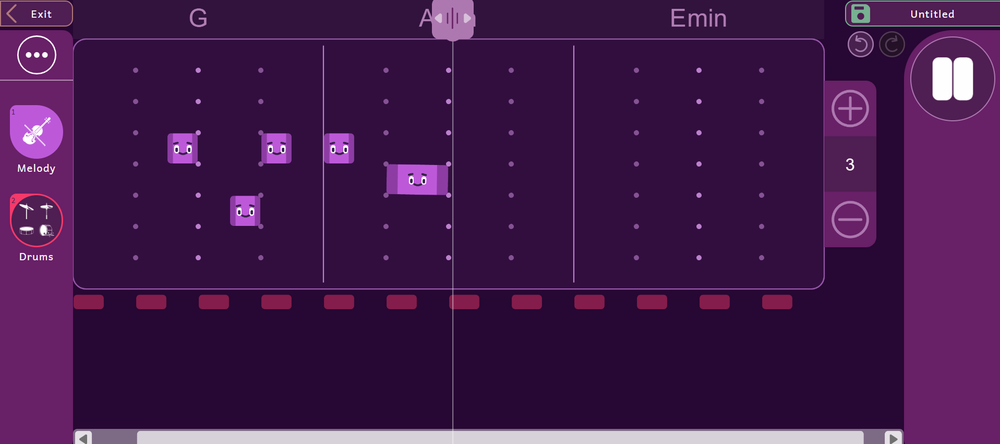

Design Scenario: Musical Toy For Toddlers
Prompt
Design a way for young children with minimal language skills to explore music.
Context
Browser based musical instruments offer users the ability to dynamically perform music and explore complex audio design. While these interactions allow for a depth of control, they can be intimidating for many adult users, let alone you children whose language skills are still developing.
Discussion
Having looked at the scenario options, I found myself drawn to the scenario of "musical toy for toddlers." The way I see it, musical instruments are usually aimed towards people of older ages, restricting musical exploration at a young age due to it's complexity. Even at an older age, instruments cant be scary to get into, and due to that, it may put off and demotivate adult users from getting into the musical realm. I find that it's evident as I hear amongst my peers that the mindset of "wishing they had learnt this when they were younger" is quite common in hobbies especially in the creative field.
The purpose sets up to be interactive and engaging, while also serving as a learning tool. As most musical instruments for that age demographic only aim to be an interactive and engaging device. The purpose of this aducational musical toy is to provide a useable interactive experience for users at an age so young, where the language skills are extremely minimal, it can allow more people to be more open to music as time progresses as they already have the experience at a young age. Alongside, this can be a good way to get children to get creative and find a way to self express.
For it's worth, the toy needs to be simple yet encouraging and engaging. It is important to keep the age demographic in mind, as it can be restricting on what elements we can add.
Design Reponse
Synopsis
In response to this scenario, I aim to design an instrumental tool that is both educational and engaging for toddlers. At this stage of the project, my idea is still in the process of getting refined, but similar to apps like Duolingo ABC, the interactive design allows toddlers to learn basic things like notes through fun and engaging imagery and symbols, while also letting them explore the instrument as they please. Using simple interfaces, making it less intimidating and confusing, and making use of colourful and cute imagery to make it fun and engaging.
Response to Purpose and Worth
In response to the purpose, this fulfills the purpose of providing toddlers with an musical toy with educational value. My musical toy will allow the users to explore and engage with the interactive experience as usual, while learning the basics in music. This makes the toy engaging, encouraging musical expression and creativity at a young age, and letting knowledge is retained from the toy can be carried into other instruments in the future. Making learning music not intimidating, making it less demotivating to get into when users are older because of the experiences they had when they were younger.
The worth the project responds to is the encouragement of musical exploration. To be able to encourage the targeted demographic to use the learning toy, it requires an interface that is appropriate for toddlers. The design will be simple, use little to no writing, to not make it overwhelming, and contain colourful elements and cute imagery to keep them engaged. These elements can encourage them to continue using the musical toy without losing interest, while also making it easy to learn with.
Design Framing
A key concept of the toy is a stage system. As a toddler with zero experience with musical instruments, it would make no sense handing them a complex instrument to start with. With a stage system, it starts the user off with starter instruments. For example, you start off with a mini piano keyboard with 8 to 25 keys. This allows for the user to adjust and get the hang of the instrument without it being too intimidating. As you progress, the keys will expand, allowing the users to learn as they progress through.
Having the age demographic in mind, it is important for me to try to not add as much elements to the interface as possible. I want to try and avoid using as much text, and instead, have visual elements do most of the talking. The visual imagery will include cute drawings of animals and characters to keep the interface fun and engaging. Alongside, audio feedback from other than the musical instrument is also vital. It should teach the users on whats wrong and right.
This will all be done through a web browser environment, which allows for more things to be fit into the musical toy for toddlers.
Design Analysis
Example 1: Chrome Music Lab (Shared-Piano)
Chrome Music Lab is one of the sites I take inspiration from. Although the site itself provides multiple different types of instruments and games to play on, I decided to look at the "Shared Piano" game. I like how the interface is simple, no big meaningless words, no distractions, just the main focus of the keyboard. After you touch a key, there is a small character that helps the user know what key they are on. Alongside, depending on what key you play, each note has a different colour in rainbow order. It's minimalistic and allows for the toddlers to explore music freely, which allows them to engage and create music. However, there is not really any learning value to the keyboard. I personally feel that this is more of a sensory play rather than an educational tool.
I feel this has an impact on my project proposal as it shows that there are already plenty of browser experiences with the same concept of a simple sensory playing instrument. However, this opens the opportunity to expand on this idea and add educational value to the toy.

Example 2: Monkey See Monkey Doh
Monkey Sing Monkey Doh is a note training site that allows users to learn to pick up which key goes on which staff. I take inspiration mostly from the concept of this browser experience. I like the educational impact this has while making it engaging. The game has stages, allowing you to slowly progress after completing each level, allowing for engagement and encouraging the users to continue on. This is beneficial and responds to the purpose of my browser experience. However, this game has a few flaws. Considering my target demographic is for young children, I find that the UI is a bit confusing to work with. There are keyboard instructions on how you move the notes, but even as an adult, I was still a bit confused with how you'd have to work the game, it lacked feedback, and it was hard since you can't move the notes and replay the notes at the same time.
That aside, the game makes learning notes interesting and engaging. They do this by using a mascot (which in this case, is the monkey) with banana as rewards, fitting for the targetted demographic, keeping the interface design cute and entertaining. The overall interface is simple, ignoring the confusing instructions on how to actually play the game. The information design lets us know what round we are on, and how many points we have, and what notes we got right and wrong. Overall, I think in my project, I can take inspiration from a few elements from this site in terms of it's aesthetics and learning value.

Example 3: Baby Music Maker
The next example is Baby Music Maker, which is a sensory music making game for children. It allows them to tap the screen wherever and play notes. Each note has a different element to it. This is engaging, and is fun for music exploration. I am drawn to this example with the use of its visual feedback. It's simple, easy enough for the user to understand.
I like how the music maker isn't necessarily depicted as an actual instrument, but rather makes a noise wherever you tap. The design is simple, suiting for the simple nature of the browser. It's a good thing to keep in mind for when I make my project, to keep it simple like this browser experience.

Example 4: MusiQuest
MusiQuest is a music maker that allows users to experiment and have fun with sound. It has educational value, allowing users to learn basic things like rhythm, instrumental families and concepts, the cultural impact of music, and more. I think the overall concept of this browser experience is very useful. It responds well to the purpose of my design as it's a musical toy for users to play around with, all while having a lot of things you can learn which could carry onto future experiences.
The information design is simple and easy to understand, and overall, it's easy to get used to. Especially for a beginner, this is not intimidating and is low pressure. I feel this designs interface is a good pick, as it fills the worth and purpose of what I want to try and do for my own design. Something I will try differently is making it even more simplified, as I feel this can be out of level for toddlers.
